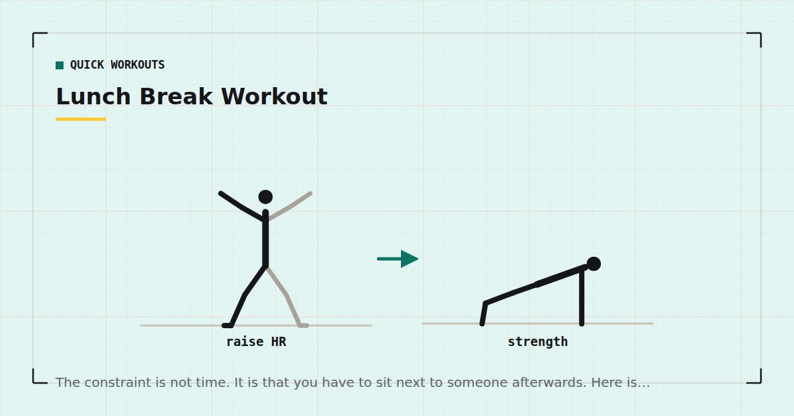

Quick Workouts & Plans
Lunch Break Workout: 20 Minutes, No Shower Needed
The constraint is not time. It is that you have to sit next to someone afterwards. Here is how to train hard enough to matter while staying presentable.

Most lunch break workout articles are just short workouts with the word lunch attached. They ignore the thing that actually stops people: you cannot return to an afternoon of meetings visibly overheated, and most workplaces have no shower.
That single constraint should reshape the whole session. This one is built around it.
The real constraint is sweat, not time
Sweating is driven mostly by core temperature, which rises with sustained elevated heart rate. Sustained is the operative word. Short bursts of hard effort separated by real recovery produce far less heat accumulation than the same total work done continuously.
This is why a circuit-style session — the default for short workouts — is exactly the wrong choice at lunchtime. Continuous work with short rest is efficient for conditioning and disastrous for staying dry. A strength session with proper rest between sets achieves more useful training for this purpose and produces a fraction of the heat.
Fortunately the strength session is also the better training choice for most people, since it is the half of the activity guidelines that desk workers most reliably miss.1
Four principles for a low-sweat session
1. Rest properly between sets
Sixty to ninety seconds, and use it. This is the single biggest lever on how hot you get, and it also makes each set better. Rest is not wasted time in a strength session, as covered in how to structure a home workout.
2. Choose strength movements, not conditioning
Slow, controlled repetitions with hard effort. No burpees, no mountain climbers, no jumping. The low-impact substitutions in no-jump cardio are useful here for a different reason than usual — they also generate less heat.
3. Keep the room cool and stay still between sets
Open a window before you start. Between sets, stand still rather than pacing; movement between sets is where a surprising amount of accumulated heat comes from.
4. Finish five minutes early
Body temperature keeps rising for a few minutes after you stop. A session that ends the moment your lunch break does will have you sweating at your desk. Stop at fifteen minutes and spend five cooling down.
The 20-minute workout
Two minutes of easy movement to warm up. Then three pairs of exercises, three sets each, resting 60–90 seconds between. Alternate within each pair so one rests while the other works.
Pair 1 — Squat and push-up
Bodyweight squat with a three-second descent, 12–15 repetitions. Then a push-up at an incline — the desk edge works well — for 8–15. Three rounds. The slow descent is what makes the squat hard without making it fast.
Pair 2 — Split squat and row
Reverse lunge or split squat, 8–10 each leg. Then a row using a resistance band anchored in a door, or an inverted row under a sturdy desk, 10–15 repetitions. Three rounds. The row matters more than anything else here, because it directly counteracts the position you have been sitting in all morning — the options are in rows at home.
Pair 3 — Glute bridge and dead bug
Glute bridge with a one-second squeeze, 15 repetitions. Then dead bugs, 8–10 each side. Two rounds. Both are floor-based, low-heat, and target exactly what sitting shuts down.
Finish with two minutes of easy standing movement and a couple of long, slow breaths. Do not skip this part; it is the cool-down that gets you back to your desk dry.
Two minutes warm-up, thirteen minutes of work, five minutes cooling down. Twenty minutes, and you should be no more than mildly warm at the end of it.
If you are in an actual office
Everything above assumes you are working from home and have a floor. In a shared office the floor exercises become socially difficult, and the session has to change.
A standing-only version works surprisingly well: wall push-ups or desk push-ups, split squats holding the desk for balance, calf raises, standing hip hinges, and isometric holds. There is a full routine in standing workouts and an office-specific one in the office workout.
A stairwell is the other underrated option. Most buildings have one, it is usually empty at lunchtime, and stairs provide loading that a flat office floor cannot — stair workouts covers how to use them properly.
Managing the afterwards
Three things that make a genuine difference:
Change your top, even if you do not shower. Most of the problem is a damp shirt rather than actual body odour. A spare t-shirt to train in and your work shirt back on afterwards solves most of it.
Cool your wrists and neck. Running cold water over the inside of your wrists for thirty seconds brings core temperature down faster than you would expect, because the blood vessels there are close to the surface.
Eat afterwards, not before. Training on a full stomach is uncomfortable, and eating afterwards fits the pattern better anyway. Nothing about this session is demanding enough to require pre-workout food, and the wider question is covered in what to eat before and after a workout.
Is a lunch workout worth it?
Yes, for a reason that has little to do with the training itself: a midday session is one of the few slots that reliably survives contact with a full week. Evening sessions get eaten by work overrunning, tiredness and everything else. A lunch break is a defended block that already exists in your calendar.
Three lunchtime sessions a week meets the muscle-strengthening half of adult activity guidance comfortably.2 It also breaks up an otherwise fully sedentary day, which addresses a somewhat different health question from training.
The honest limitation is that you cannot train very hard this way. Genuine maximum effort makes you hot, and heat is the thing you cannot afford. Accept that this is a solid moderate session rather than your hardest of the week, and put the harder work at the weekend.
Where to go next
If your lunch break is your main window, build the week around it with the weekly home workout schedule. If sitting is the underlying problem, the mobility routine for desk workers targets it more directly.
Frequently asked questions
Can you work out on a lunch break without showering?
Yes, if you structure the session around heat rather than time. Rest sixty to ninety seconds between sets, choose strength movements over continuous circuits, keep the room cool, and stop five minutes early so your temperature falls before you return to your desk.
How long should a lunch break workout be?
About twenty minutes total: two minutes warming up, thirteen minutes of work, and five minutes cooling down. The cool-down is the part people cut and the part that determines whether you are still sweating at your desk.
What exercises can I do at the office without equipment?
Desk push-ups, split squats holding the desk for balance, calf raises, standing hip hinges and isometric holds all work in normal clothes without getting on the floor. A stairwell adds genuine loading if your building has one.
Is it better to work out at lunch or after work?
Whichever you will actually do. Lunchtime sessions survive busy weeks better because the slot already exists in your calendar and is harder for work to consume. Evening sessions allow harder training because sweating does not matter.
Should I eat before or after a lunch workout?
Afterwards. A twenty-minute moderate session does not require pre-workout fuel, and training on a full stomach is uncomfortable. Eating afterwards also fits the natural order of a lunch break.
Sources and further reading
- NHS. Physical activity guidelines for adults aged 19 to 64.
- World Health Organization. WHO Guidelines on Physical Activity and Sedentary Behaviour. 2020.
- MedlinePlus, U.S. National Library of Medicine. Exercise and Physical Fitness.
- Mayo Clinic. Exercise intensity: How to measure it.
Comments
Comments are not enabled yet. Add a hosted comment embed (Disqus, Commento, Giscus) inside this container when you are ready.